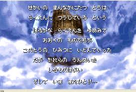

TOP
TOP
Tweet
魔界塔士Sa・Gaのすべて
ホーム
>
ＧＢサガ
>
魔界塔士Sa・Ga
> 魔界塔士Sa・Gaのすべて
世界観
魔界塔士Sa・Gaの世界観

マップとセリフ
大陸世界（1階）
楽園（3階）
地獄（4階）
海洋世界（5階）
石像（7階）
病院（9階）
空中世界（10階）
渇いた世界（13階）
洪水の世界（14階）
都市世界(16階)
建築世界(18階)
核シェルター(19階)
記録室（20階）
花畑(21階)
アシュラ(23階)
真の塔
楽園
モンスター
モンスター
武器・能力と威力など
アイテム
↑